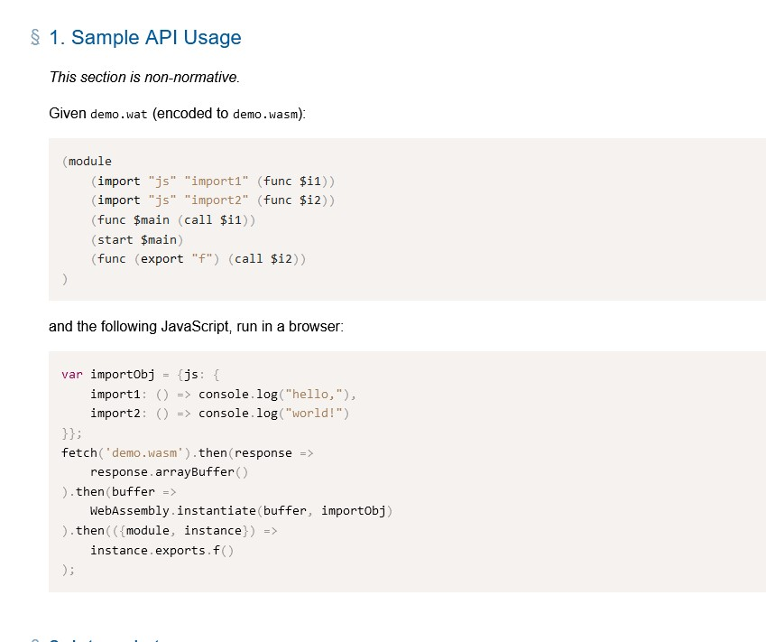

WebAssembly is mostly used for legacy apps that can't just be thrown away into the dumpster that is abandonware.
WebAssembly is machine-oriented, and enclosed here is an image consisting of sample code. This code was found in source 3.
If you take a look at the top sample, you'll find that it looks suspiciously like machine code or Assembly.

Well, I mean, it IS called WebAssembly for a reason; It is named after the low-level language seen in old computers
(I mean REALLY old, 80s or 90s programs such as games made for the N64).
Despite the codebase being almost machine code, according to Source 2, this actually has use in triple A games, Video editing, music, image edits, and so much more.
Bottom line, with WebAssembly, anything is possible with the right knowledge!